11 Assignments
Note that depending on which data set you received, your results might differ slightly from the results presented here!
11.1 Assignment 2 (Hypothesis Testing)
As a marketing manager at a video streaming service, you are interested in the effect of online advertising on the number of streams that a movie receives. To test the effect of online advertising on streams, you select a representative sample of 200 movies and randomly assign 100 movies to be included in an online advertising campaign. The other half of the sample serves as the control group. You run the experiment for one week and collect data regarding the number of streams from this period. In addition, you collect other variables about the movies that you wish to analyze. Overall, the data set includes the following variables:
- movieID: unique movie ID
- streams_sd: number of streams in SD-quality
- streams_hd: number of streams in HD-quality
- online_advertising: indicator whether a movie was included in the online advertising campaign (0 = no, 1 = yes)
- customer_rating: satisfaction measured on a 5-point Likert scale after the moviews were watched: (1) “very dissatisfied” – (5) “very satisfied”"
- academy_award: 0= non-nominated film, 1=nominated film
- genre: 1 = drama, 2 = romance, 3 = comedy, 4 = thriller, 5 = action
Apply appropriate statistical methods to answer the following questions:
- Is there a significant difference in streams between movies that were included in the online advertising campaign and those that were not included? (Please conduct the test for SD and HD movies)
- Is there a significant difference in streams between movies in HD and SD quality?
- Is there a significant association between the genre of a movie and the academy award nomination?
- Is there a significant difference in customer ratings between nominated and non-nominated movies?
When answering the questions, please remember to address the following points:
- Formulate the corresponding hypotheses and choose an appropriate statistical test
- Provide the reason for your choice and discuss if the assumptions of the test are met
- Convert the variables to the appropriate type (e.g., factor variables)
- Create appropriate graphs to explore the data (e.g., boxplot, bar chart, histogram)
- Provide appropriate descriptive statistics for the variables
- Report and interpret the test results accurately (including confidence intervals where appropriate)
- Finally, don’t forget to report your research conclusion in an appropriate way
When you are done with your analysis, click on “Knit to HTML” button above the code editor. This will create a HTML document of your results in the folder where the “assignment.Rmd” file is stored. Open this file in your Internet browser to see if the output is correct. If the output is correct, submit the HTML file via Learn@WU. The file name should be “assignment2_studendID_name.html”.
11.1.1 Load data
## 'data.frame': 200 obs. of 7 variables:
## $ streams_sd : int 3511 3068 2445 3839 3180 4369 1187 2829 2222 1139 ...
## $ online_advertising: int 0 0 1 1 0 1 0 1 1 0 ...
## $ customer_rating : int 5 5 3 3 4 5 3 5 1 2 ...
## $ streams_hd : int 1468 2164 2164 1762 1524 1697 1883 1730 1870 760 ...
## $ movieID : int 1 2 3 4 5 6 7 8 9 10 ...
## $ genre : int 1 1 1 1 1 1 1 1 1 1 ...
## $ academy_award : int 1 1 1 0 1 1 1 1 1 1 ...The first step is to load the required packages for visualization and descriptive statistcs.
Note that these packages should be installed prior to creating the HTML output from the .Rmd file.
11.1.2 Question 1
First we will analyse whether the advertising campaign had an effect on SD streams. We need to formulate a hypothesis which we can test. In this case the null hypothesis is that the campaign had no effect on the mean number of streams, i.e. that there is no difference in the mean number of streams. The alternative hypothesis states that the campaign did have an effect, meaning that there is a difference in the mean number of streams. In more formal notation this is:
\[H_0: \mu_0 = \mu_1 \\ H_1: \mu_0 \neq \mu_1\]
We need to transform the variable online_advertising into a factor variable for some of our applications.
A good way to get a feeling for the data is to create descriptive statistics and appropriate plots (e.g., plot of means, boxplot).
##
## Descriptive statistics by group
## group: no
## vars n mean sd median trimmed mad min max range skew kurtosis se
## X1 1 100 2053 840 2048 2023 1115 641 4067 3426 0.22 -1 84
## --------------------------------------------------------
## group: yes
## vars n mean sd median trimmed mad min max range skew kurtosis se
## X1 1 100 3305 942 3338 3308 987 1099 5571 4472 -0.02 -0.26 94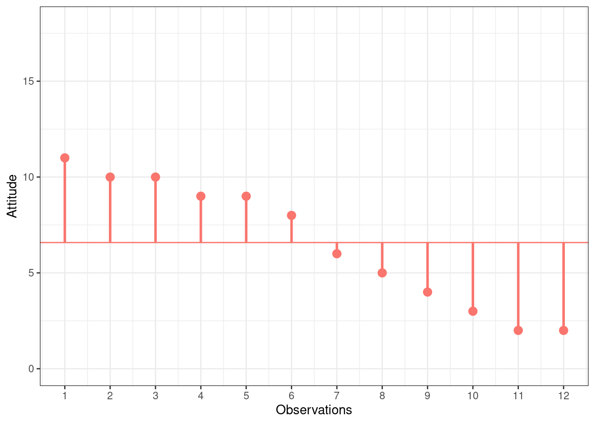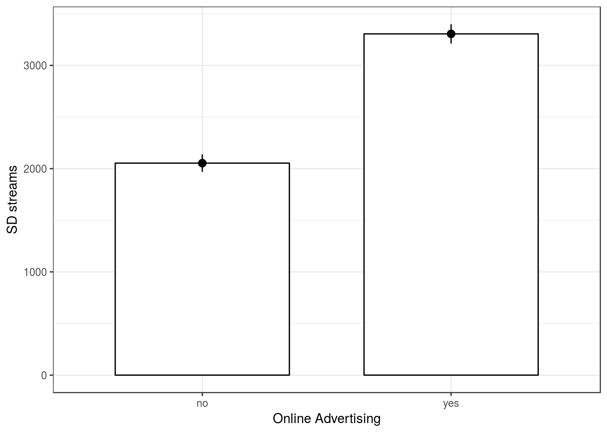
As we can see in both the descriptive statistics and the plots, the mean of the number of streams is higher where online_advertising = 1, i.e. for the videos that were included in the marketing campaign. To test whether or not this difference is significant, we need to use a two sample t-test. The requirements are clearly met:
- Our dependent value is on a ratio scale.
- Since we have more than 30 observations per group we do not really have to concern ourselves with whether the data is normally distributed or not.
- If a video was inluded in the campaign or not was assigned randomly.
- Since we have equal group sizes, the homogeneity of variance assumption is not too relevant. Furthermore, R automatically performs Welch’s t-test, which corrects for unequal variance anyway.
Thus we can perform the test in R
##
## Welch Two Sample t-test
##
## data: streams_sd by online_advertising
## t = -10, df = 200, p-value <0.0000000000000002
## alternative hypothesis: true difference in means is not equal to 0
## 95 percent confidence interval:
## -1501 -1003
## sample estimates:
## mean in group no mean in group yes
## 2053 3305The test is significant for any sensible level of confidence, leading us to reject the null hypothesis that there is no difference in the mean number of streams. In effect, this means that the advertising campaign had an effect on the average number of times a video was streamed. Another thing we can extract from this test result is the confidence interval around the difference in means. We are 95% certain that the true difference of means lies somewhere between -1003.213 and -1500.967.
The same can be done analogously for HD streams:
##
## Descriptive statistics by group
## group: no
## vars n mean sd median trimmed mad min max range skew kurtosis se
## X1 1 100 1493 435 1458 1490 457 553 2605 2052 0.13 -0.49 43
## --------------------------------------------------------
## group: yes
## vars n mean sd median trimmed mad min max range skew kurtosis se
## X1 1 100 2163 629 2138 2167 629 534 3874 3340 -0.02 -0.03 63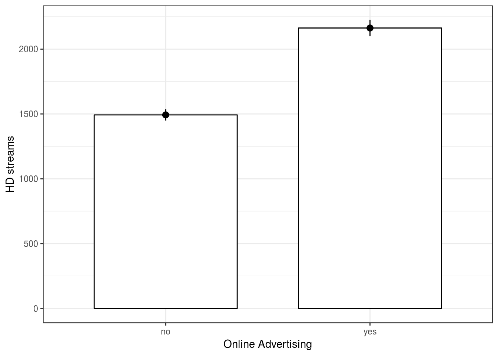
Again, the summary statistics and boxplots seem to indicate that there is a difference in means. Using the same reasoning as before, we can deduce that we need a two sample t-test to determine whether this difference is signficant.
##
## Welch Two Sample t-test
##
## data: streams_hd by online_advertising
## t = -9, df = 200, p-value = 0.000000000000002
## alternative hypothesis: true difference in means is not equal to 0
## 95 percent confidence interval:
## -821 -519
## sample estimates:
## mean in group no mean in group yes
## 1493 2163Again, the p-value is so low that any sensible signifcance level would lead us to reject the null hypothesis, leading us to the conclusion that there is a difference in mean number of streams between videos included in the campaign and those that aren’t. Looking again at the 95 percent confidence intervals, however, it would appear that the effect was stronger for SD streams than for HD streams, since here we are 95 percent certain that the true difference in means lies between -821.2123 and -519.3277.
11.1.3 Question 2
Next we want to examine whether HD and SD streams have similar numbers o on average. The null hypothesis here is that there is no difference in the mean number of HD streams and the mean number of SD streams, with the alternative hypothesis is that such a difference exists. In mathematical notation this implies
\[H_0: \mu_0 = \mu_1 \\ H_1: \mu_0 \neq \mu_1\]
Again, we start with descriptive statistics to get a feel for the data.
## vars n mean sd median trimmed mad min max range skew kurtosis se
## X1 1 200 2679 1089 2666 2652 1070 641 5571 4930 0.18 -0.59 77## vars n mean sd median trimmed mad min max range skew kurtosis se
## X1 1 200 1828 636 1760 1798 599 534 3874 3340 0.41 -0.08 45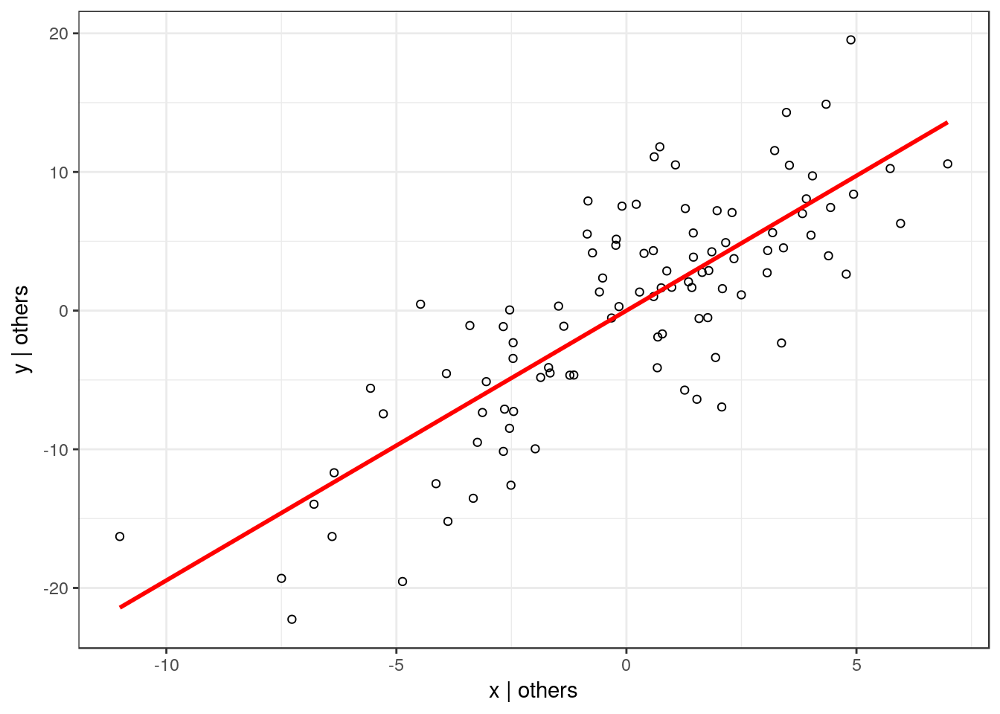
As in question one, it appears that there is a difference in the means. To test whether it is significant we again need a t-test, with one important distinction: Our observations were in both experimental conditions, meaning we have data on HD and SD streams for each observation. This means that we need a dependent means t-test. The other assumptions are virtually identical to the regular t-test. The test can be executed in R by adding paired = TRUE to the code.
##
## Paired t-test
##
## data: movie_data$streams_hd and movie_data$streams_sd
## t = -10, df = 200, p-value <0.0000000000000002
## alternative hypothesis: true difference in means is not equal to 0
## 95 percent confidence interval:
## -991 -713
## sample estimates:
## mean of the differences
## -852The p-value is again lower than any sensible signifance level, which means that we reject the null hypothesis that there is no difference in the mean number of streams. Interesting to note again is the 95 percent confidence interval, which states that we are 95 percent certain that the true difference of means lies between -990.5032 and -712.5568.
11.1.4 Question 3
Next we want to know whether there is a significant association between the genre of a movie and the academy award nomination. This is essentially a question of dependence, which means that our null hypothesis is that the two variables are independent and the alternative hypothesis is that they are dependent.
First we need to reshape the first variable into a factor and, while we’re at it, give the factor levels more descriptive names.
The next step is to produce a relative frequency table and an appropriate visualization - in this case a stacked bar plot.

If the two variables truly are independent, knowing the genre would tell us nothing about the probability of an academy award. The relative frequency table and the above plot hint at the fact that this may not be the case. To actually test this we use the Chi-squared test .
## academy_award
## genre 0 1
## Drama 10 26
## Romance 24 22
## Comedy 13 13
## Thriller 40 17
## Action 21 14##
## Pearson's Chi-squared test
##
## data: cont_table
## X-squared = 20, df = 4, p-value = 0.002Applying the widely used confidence level of 0.05 leads us to reject the null hypothesis in this case, with the alternative hypothesis being that the variables genre and academy_award are actually dependent.
11.1.5 Question 4
Finally we want to examine whether there is a difference in customer ratings between movies that wer nominated for an academy award and those that were not. In this case our null hypothesis is that both have a similar distribution in regard to their customer rating. The alternative hypothesis is that they are not drawn from the same distribution.
First we create a table with the conditional relative frequencies, which enables us to plot the data.
The next step is to create a barplot of the conditional relative frequencies, to give us an overview of the distribution of the data.
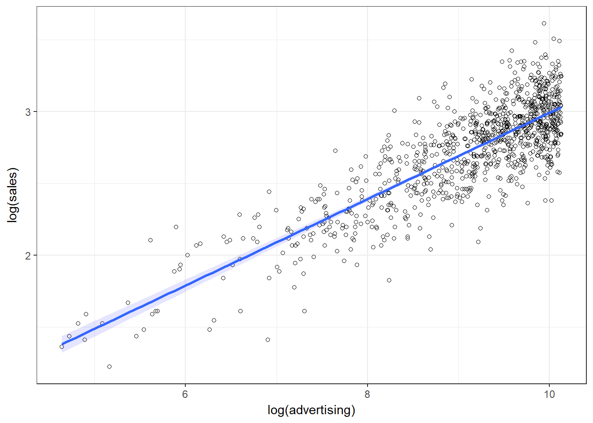
Based solely on this plot it seems that movies with academy awards are more likely to gain higher customer ratings. To be able to test this, we need the Mann-Whitney U Test (a.k.a. Wilcoxon rank-sum test). Obviously, we need to check whether the assumptions for the test are fulfilled.
- Our dependent variable is ordinally scaled (i.e. there is a “natural” order to customer satisfaction ratings).
- The independent variable is a factor with two levels.
- The data comes from two independent samples.
The reason why the dependent t-test is not appropriate is because the dependent variable is not measured on a continuous scale (i.e., inveral or ratio).
To perform the Mann-Whitney U Test we use the function wilcox.test().
##
## Wilcoxon rank sum test with continuity correction
##
## data: customer_rating by academy_award
## W = 4000, p-value = 0.09
## alternative hypothesis: true location shift is not equal to 0Using a confidence level of 0.05, we cannot reject the null hypothesis in this case, meaning we would retain the assumption that customer ratings for movies with and without academy award nomination are drawn from the same distribution.
Note that a using a different confidence level (e.g., 0.1) we could speak of a marginally significant result.
11.2 Assignment 3 (Anova)
The data file contains customer information from an online fashion shop. In an experiment, the customers were exposed to different types of online advertising over the past year (randomly assigned) and now you wish to analyze the results.
The following variables are included in the data set:
- customerID: unique customer ID
- revenue: revenue per cusomer for the past year (in EUR)
- gender: 0=male, 1=female
- retargeting: type of online advertising that the customer was exposed to (3 levels: 1 = no advertising, 2 = generic retargeting, 3 = dynamic retargeting)
- customerRank: ranking of customers according to their expenditure level (low rank = valuable customer, high rank = less valuable customer)
Use R and appropriate analytical techniques to answer the following questions:
- Has the types of online advertising an effect on revenue? Are there significant differences between the individual groups?
- Does the effect of online advertising on revenue depend on gender? (conduct a 2 x 3 analysis of variance with “revenue” as the dependent variable and “gender” and “retargeting” as the independent variables or factors.)
- Is the customer ranking significantly influenced by the type of online advertising? Are there significant differences between the individual groups?
When answering the questions, please remember to address the following points:
- Formulate the corresponding hypotheses and choose an appropriate statistical test
- Provide the reason for your choice and discuss if the assumptions of the test are met
- Convert the variables to the appropriate type (e.g., factor variables)
- Create appropriate graphs to explore the data (e.g., boxplot, bar chart)
- Provide appropriate descriptive statistics for the variables
- Report and interpret the test results accurately
- Finally, don’t forget to report your research conclusion in an appropriate way
When you are done with your analysis, click on “Knit to HTML” button above the code editor. This will create a HTML document of your results in the folder where the “assignment3.Rmd” file is stored. Open this file in your Internet browser to see if the output is correct. If the output is correct, submit the HTML file via Learn@WU. The file name should be “assignment3_studendID_name.html”.
11.2.1 Load data
As always, the first step is to load required packages (packages that have not been used as often in the course will be loaded as required to show which packages contain certain functions) and to load and inspect the data.
## 'data.frame': 291 obs. of 5 variables:
## $ revenue : int 754 2141 1762 2103 1859 1118 2606 1269 2464 733 ...
## $ gender : int 0 0 1 0 0 0 1 1 1 0 ...
## $ retargeting: int 2 2 3 3 2 1 2 1 2 1 ...
## $ customerID : int 1 2 3 4 5 6 7 8 9 10 ...
## $ rank : int 254 97 140 99 125 223 50 196 61 256 ...Next we are going to recode some of the variables into factors and give them more descriptive level names.
11.2.2 Question 1
To answer whether the type of advertising has an effect on revenue we need to formulate a testable null hypothesis. In our case the null hypothesis is stating that the average level of sales is equal for all advertising types. In mathematical notation this implies:
\[H_0: \mu_1 = \mu_2 = \mu_3 \]
The alternate hypothesis is simply that the means are not all equal, i.e.,
\[H_1: \textrm{Means are not all equal}\]
If you wanted to put this in mathematical notation, you could also write:
\[H_1: \exists {i,j}: {\mu_i \ne \mu_j} \]
However, this was not required.
The appropriate test for such a hypothesis is one-way ANOVA since we have a metric scales dependent variable and a categorical independent variable with more than two levels.
Next we will calculate summary statistics for the data and produce an approppriate plot.
## dld.full$retargeting: no retargeting
## nbr.val nbr.null nbr.na min max
## 103.00 0.00 0.00 24.00 3406.00
## range sum median mean SE.mean
## 3382.00 139425.00 1299.00 1353.64 70.13
## CI.mean.0.95 var std.dev coef.var
## 139.09 506518.45 711.70 0.53
## --------------------------------------------------------
## dld.full$retargeting: generic retargeting
## nbr.val nbr.null nbr.na min max
## 89.00 0.00 0.00 137.00 4371.00
## range sum median mean SE.mean
## 4234.00 152181.00 1705.00 1709.90 87.46
## CI.mean.0.95 var std.dev coef.var
## 173.81 680801.46 825.11 0.48
## --------------------------------------------------------
## dld.full$retargeting: dynamic retargeting
## nbr.val nbr.null nbr.na min max
## 99.0 0.0 0.0 212.0 4297.0
## range sum median mean SE.mean
## 4085.0 217953.0 2237.0 2201.5 88.1
## CI.mean.0.95 var std.dev coef.var
## 174.9 768762.8 876.8 0.4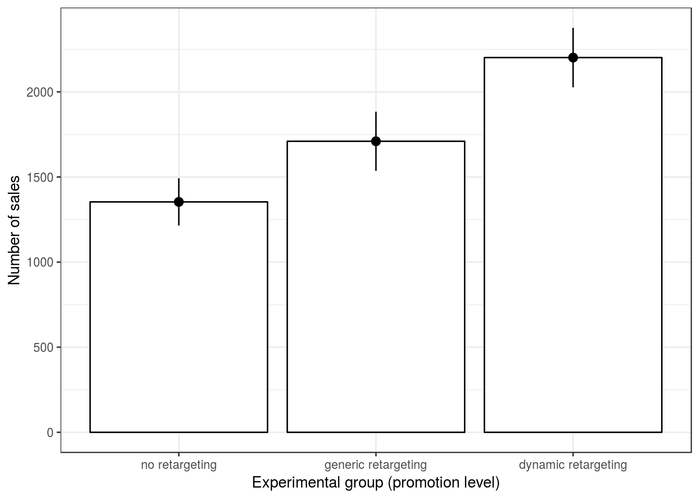
Both the summary statistics and the plot hint at the fact that the means may not be equal. Before we move to the test, we need to see if a series of assumptions are met, namely:
- Distributional assumptions
- Homogeneity of variances
- Indepnedence of observations
The last assumption is satisfied due to the fact that the observations were randomly assigned to the advertisement groups. To see if we need to worry about distributional assumptions we first take a look at the number of observations in each advertising group.
##
## no retargeting generic retargeting dynamic retargeting
## 103 89 99Due to the fact that there always more than 30 observations in each group we can rely on the central limit theorem to satisfy the distributional assumptions.
Homogeneity of variances can be checked with Levene’s test (implemented as leveneTest() from the car package). The null hypothesis of this test is that the variances are equal, with the alternative hypothesis being that the variances not all equal.
## Levene's Test for Homogeneity of Variance (center = mean)
## Df F value Pr(>F)
## group 2 1.96 0.14
## 288The test is not significant (for a signifcance level of 5 %), meaning that we do not reject the null hypothesis of equal variances and can operate under the assumption that the variances are equal.
Since all assumptions are fulfilled we can move on to conducting the actual ANOVA using the aov() function.
## Df Sum Sq Mean Sq F value Pr(>F)
## retargeting 2 36509595 18254797 28.1 0.0000000000069 ***
## Residuals 288 186914162 649008
## ---
## Signif. codes: 0 '***' 0.001 '**' 0.01 '*' 0.05 '.' 0.1 ' ' 1The p-value is below any sensible level of signficance, which means that we reject the null hypothesis of the means being equal in the three advertising groups.
Next we will briefly inspect the residuals of the ANOVA to see if the assumptions of the test really are justified.

The first plot gives us a feel for the distribution of the residuals of the three groups. The residuals seem to be roughly equally distributed, which speaks for the fact that the homogeneity of variances assumptions is fulfilled.

The second plot is a QQ-plot of the residuals, meant as a quick visual check to see if the normality assumption is fulfilled. Leading up to the test we only checked if there were more than 30 observations per group to satisfy the normality assumption but despite this being fulfilled it is still important to check the normality of the residuals, as any strange behaviour here may indicate problems with the model specification.
To further confirm that the residuals are roughly normally distributed we employ the Shapiro-Wilk test. The null hypothesis is that the distribution of the data is normal, with the alternative hypothesis positing that the data is not normally distributed.
##
## Shapiro-Wilk normality test
##
## data: resid(aov)
## W = 1, p-value = 0.8The p value is far above any widely used significance level and thus we can not reject the null hypothesis of normal distribution, which further implies that the normality assumption is fulfilled.
The ANOVA result only tells us that the means of the three groups are not equal, but it does not tell us anything about which pairs of means are unequal. To find this out we need to conduct post hoc tests. Here we will conduct both the Bonferroni correction as well as Tukey’s HSD test, however either would be sufficient for your homework.
Bonferroni’s correction conducts multiple pairwise t-tests, with the null hypothesis being that of equal means in each case and the alternative hypothesis stating that the means are unequal.
##
## Pairwise comparisons using t tests with pooled SD
##
## data: dld.full$revenue and dld.full$retargeting
##
## no retargeting generic retargeting
## generic retargeting 0.007 -
## dynamic retargeting 0.000000000003 0.000117127044
##
## P value adjustment method: bonferroniAll of the p-values in our output are well below 0.05, meaning that we reject the null hypothesis in all three cases.
Tukey’s HSD similarly compares pairwise means, corrected for family-wise errors.
##
## Simultaneous Tests for General Linear Hypotheses
##
## Multiple Comparisons of Means: Tukey Contrasts
##
##
## Fit: aov(formula = revenue ~ retargeting, data = dld.full)
##
## Linear Hypotheses:
## Estimate Std. Error t value
## generic retargeting - no retargeting == 0 356 117 3.06
## dynamic retargeting - no retargeting == 0 848 113 7.48
## dynamic retargeting - generic retargeting == 0 492 118 4.18
## Pr(>|t|)
## generic retargeting - no retargeting == 0 0.00691 **
## dynamic retargeting - no retargeting == 0 < 0.0001 ***
## dynamic retargeting - generic retargeting == 0 0.00012 ***
## ---
## Signif. codes: 0 '***' 0.001 '**' 0.01 '*' 0.05 '.' 0.1 ' ' 1
## (Adjusted p values reported -- single-step method)As in the case of Bonferroni’s correction, all three p-values are well below 0.05 and thus we reject the null hypothesis of equal means. Tukey’s HSD further lets us estimate the difference in means with corresponding confidence intervals.
##
## Simultaneous Confidence Intervals
##
## Multiple Comparisons of Means: Tukey Contrasts
##
##
## Fit: aov(formula = revenue ~ retargeting, data = dld.full)
##
## Quantile = 2.4
## 95% family-wise confidence level
##
##
## Linear Hypotheses:
## Estimate lwr upr
## generic retargeting - no retargeting == 0 356.258 81.555 630.961
## dynamic retargeting - no retargeting == 0 847.905 580.748 1115.061
## dynamic retargeting - generic retargeting == 0 491.647 214.383 768.910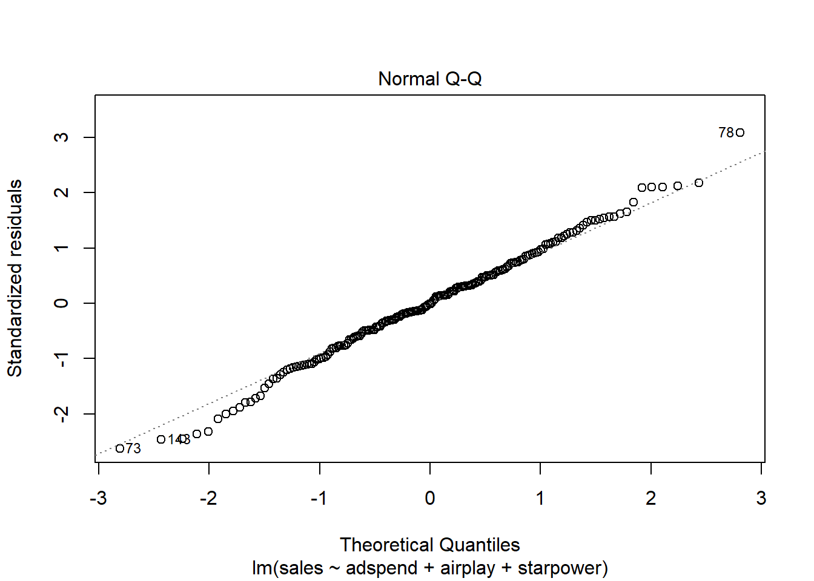
It is clearly visible that none of the CIs cross the 0 bound, which further indicates that the differences in means are statistically significantly different from 0.
From a reporting standpoint we can say that revenue is higher when using generic retargeting vs. no retargeting, dynamic retargeting vs. no retargeting and also when using dynamic retargeting vs. generic retargeting.
11.2.3 Question 2
Next we want to analyse whether gender interacts with retargeting when it comes to revenue. The correct tool for this analysis is n-way ANOVA (a.k.a factorial ANOVA). As usual, we start off with some descriptive statistics and plots to get a feel for the data.
## dld.full$Group: dynamic retargeting_female
## nbr.val nbr.null nbr.na min max
## 50.0 0.0 0.0 432.0 4297.0
## range sum median mean SE.mean
## 3865.0 129647.0 2600.5 2592.9 110.7
## CI.mean.0.95 var std.dev coef.var
## 222.5 613064.5 783.0 0.3
## --------------------------------------------------------
## dld.full$Group: dynamic retargeting_male
## nbr.val nbr.null nbr.na min max
## 49.00 0.00 0.00 212.00 3391.00
## range sum median mean SE.mean
## 3179.00 88306.00 1849.00 1802.16 112.61
## CI.mean.0.95 var std.dev coef.var
## 226.41 621318.93 788.24 0.44
## --------------------------------------------------------
## dld.full$Group: generic retargeting_female
## nbr.val nbr.null nbr.na min max
## 45.00 0.00 0.00 336.00 3387.00
## range sum median mean SE.mean
## 3051.00 75377.00 1705.00 1675.04 120.18
## CI.mean.0.95 var std.dev coef.var
## 242.20 649920.04 806.18 0.48
## --------------------------------------------------------
## dld.full$Group: generic retargeting_male
## nbr.val nbr.null nbr.na min max
## 44.00 0.00 0.00 137.00 4371.00
## range sum median mean SE.mean
## 4234.00 76804.00 1692.00 1745.55 128.42
## CI.mean.0.95 var std.dev coef.var
## 258.99 725662.07 851.86 0.49
## --------------------------------------------------------
## dld.full$Group: no retargeting_female
## nbr.val nbr.null nbr.na min max
## 51.00 0.00 0.00 38.00 3406.00
## range sum median mean SE.mean
## 3368.00 73336.00 1414.00 1437.96 94.26
## CI.mean.0.95 var std.dev coef.var
## 189.32 453109.96 673.13 0.47
## --------------------------------------------------------
## dld.full$Group: no retargeting_male
## nbr.val nbr.null nbr.na min max
## 52.00 0.00 0.00 24.00 3261.00
## range sum median mean SE.mean
## 3237.00 66089.00 1141.00 1270.94 103.29
## CI.mean.0.95 var std.dev coef.var
## 207.35 554728.45 744.80 0.59

Both the summary statistics and the plots seem to indicate a difference between men and women. Before we can jump straight into the analysis, we need to test whether the assumptions of the model are justified.
We begin with the distributional assumptions. To this end we check how many observations are in each group.
##
## dynamic retargeting_female dynamic retargeting_male
## 50 49
## generic retargeting_female generic retargeting_male
## 45 44
## no retargeting_female no retargeting_male
## 51 52Since there are more than 30 observations in each group, we can again rely on the central limit theorem to satisfy the normality assumption. Next is the homogeneity of variances assumption, which we again test using Levene’s test.
## Levene's Test for Homogeneity of Variance (center = mean)
## Df F value Pr(>F)
## group 5 0.9 0.48
## 285Again the p-value is far above any widely used significance level and we can not reject the null hypothesis of equal variances. As the necessary assumptions are fulfilled, we can move on to the factorial ANOVA.
## Df Sum Sq Mean Sq F value Pr(>F)
## retargeting 2 36509595 18254797 30.49 0.000000000001 ***
## gender 1 6837311 6837311 11.42 0.00083 ***
## retargeting:gender 2 9466785 4733392 7.91 0.00045 ***
## Residuals 285 170610067 598632
## ---
## Signif. codes: 0 '***' 0.001 '**' 0.01 '*' 0.05 '.' 0.1 ' ' 1Since the interaction effect is significant, we can no longer interpret the main effects and can only resort to saying that the effect of one factor depends on the other, i.e. that gender has an effect on the level of revenue in each advertising group. This means that gender has an effect on the revenue generated in each advertising group.
As a final step we again check the residuals to see whether or not the assumptions are justified.
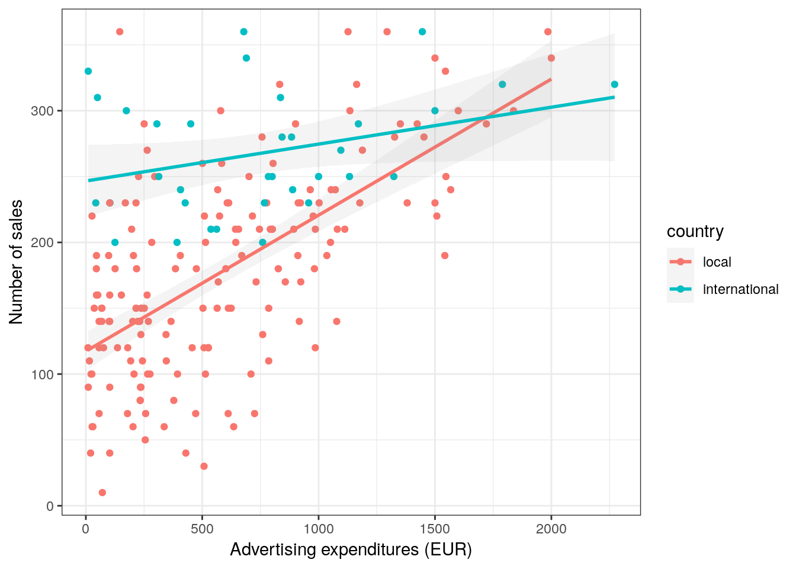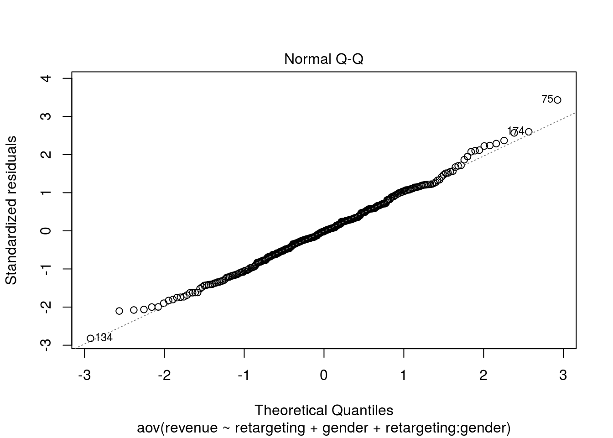
##
## Shapiro-Wilk normality test
##
## data: resid(aov)
## W = 1, p-value = 0.6Both assumptions (homogeneity of variances and the normality assumption) seem to be justifiable through the residuals.
11.2.4 Question 3
For the last question we want to examine whether customer ranks are signifcantly different for different types of advertising. Because we are dealing with data on an ordinal scale, we can not use ANOVA for this type of question. The non-parametric counterpart is the Kruskal-Wallis test, which tests for differences in medians between groups. Hence, the null hypothesis is that the medians are equal in each group and the alternative hypothesis is that the medians are unequal.
\[H_0: \tilde{x}_1 = \tilde{x}_2 = \tilde{x}_3 \] \[H_1: \textrm{The meadians are not all equal} \] A good way to visualize ordinal data is through a boxplot.

The boxplot seems to indicate that the medians are unequal.
The only assumption that we require for this test is that the dependent variable is at least ordinal, which is fulfilled for customer ranks. Hence we can move on to performing the test in R.
##
## Kruskal-Wallis rank sum test
##
## data: rank by retargeting
## Kruskal-Wallis chi-squared = 50, df = 2, p-value = 0.00000000002The p-value is again below any sensible signifcance level and thus we reject the null hypothesis of equal medians. This means that the median rank of customers is different for different types of retargeting, implying that the type of retargeting has an effect on the customer rank.
To further see which of the medians are unequeal we perform the Nemenyi post hoc test, which can be found in the PCMCR package in R. The null hyptohesis is that the pairwise medians are equal, while the alternative hypothesis is that the pairwise medians are unequal.
##
## Pairwise comparisons using Tukey and Kramer (Nemenyi) test
## with Tukey-Dist approximation for independent samples
##
## data: dld.full$rank and dld.full$retargeting
##
## no retargeting generic retargeting
## generic retargeting 0.00998 -
## dynamic retargeting 0.000000000007 0.00032
##
## P value adjustment method: noneAll of the p-values are well below 0.05, meaning that the pairwise differences between the medians are always signifianct. This in turn implies that every type of advertising leads to different customer ranks.
11.3 Assignment 4 (Regression)
As a marketing manager of a consumer electronics company, you are assigned the task to analyze the relative influence of different marketing activities. Specifically, you are supposed to analyse the effects of (1) TV advertising, (2) online advertising, and (3) radio advertising on the sales of fitness trackers (wristbands). Your data set consists of sales of the product in different markets (each line represents one market) from the past year, along with the advertising budgets for the product in each of those markets for three different media: TV, online, and radio.
The following variables are available to you:
- Sales (in thousands of units)
- TV advertising budget (in thousands of Euros)
- Online advertising budget (in thousands of Euros)
- Radio advertising budget (in thousands of Euros)
Please conduct the following analyses:
- Formally state the regression equation, which you will use to determine the relative influence of the marketing activities on sales.
- Describe the model variables using appropriate statstics and plots
- Estimate a multiple linear regression model to determine the relative influence of each of the variables. Before you interpret the results, test if the model assumptions are fulfilled and use appropriate tests and plots to test the assumptions.
- Interpret the model results:
- Which variables have a significant influence on sales and what is the interpretation of the coefficients?
- What is the relative importance of the predictor variables?
- Interpret the F-test
- How do you judge the fit of the model? Please also visualize the model fit using an appropriate graph.
- What sales quantity would you predict based on your model for a product when the marketing activities are planned as follows: TV: 150 thsd. €, Online: 26 thsd. €, Radio: 15 thsd. €? Please provide the equation you used to make the prediction.
When you are done with your analysis, click on “Knit to HTML” button above the code editor. This will create a HTML document of your results in the folder where the “assignment4.Rmd” file is stored. Open this file in your Internet browser to see if the output is correct. If the output is correct, submit the HTML file via Learn@WU. The file name should be “assignment4_studendID_name.html”.
11.3.1 Load data
sales_data <- read.table("https://raw.githubusercontent.com/IMSMWU/Teaching/master/MRDA2017/assignment4.2.dat",
sep = "\t",
header = TRUE) #read in data
sales_data$market_id <- 1:nrow(sales_data)
head(sales_data)str(sales_data)## 'data.frame': 240 obs. of 5 variables:
## $ tv_adspend : num 146 241 286 138 149 ...
## $ online_adspend: num 31.5 12.4 9.9 7.2 21 36.7 1.3 18.4 11.9 16.5 ...
## $ radio_adspend : int 39 9 5 27 34 68 28 39 26 22 ...
## $ sales : num 14.5 15.6 16 11.4 11 18.7 7.4 10.3 9 17.8 ...
## $ market_id : int 1 2 3 4 5 6 7 8 9 10 ...11.3.2 Question 1
In a first step, we specifiy the regression equation. In this case, sales is the dependend variable which is regressed on the different types of advertising expenditures that represent the independent variables. Thus, the regression equation is:
\[Sales=\beta_0 + \beta_1 * tvadspend + \beta_2 * onlineadspend + \beta_3 * radioadspend + \epsilon\]
11.3.3 Question 2
The descriptive statistics can be checked using the describe() function:
library(psych)
psych::describe(sales_data)## vars n mean sd median trimmed mad min max range skew
## tv_adspend 1 240 158 81.6 161 160 97.3 0.1 300 300 -0.14
## online_adspend 2 240 26 14.0 26 25 15.2 0.5 68 68 0.48
## radio_adspend 3 240 26 13.3 25 25 14.8 1.0 68 67 0.25
## sales 4 240 15 5.1 15 15 5.3 1.0 28 27 -0.13
## market_id 5 240 120 69.4 120 120 89.0 1.0 240 239 0.00
## kurtosis se
## tv_adspend -1.04 5.27
## online_adspend -0.07 0.90
## radio_adspend -0.44 0.86
## sales -0.23 0.33
## market_id -1.22 4.48Since we have continuous variables, we use scatterplots to investigate the relationship between sales and each of the predictor variables.
library(ggplot2)
ggplot(sales_data, aes(x = tv_adspend, y = sales)) + geom_point() +theme_bw()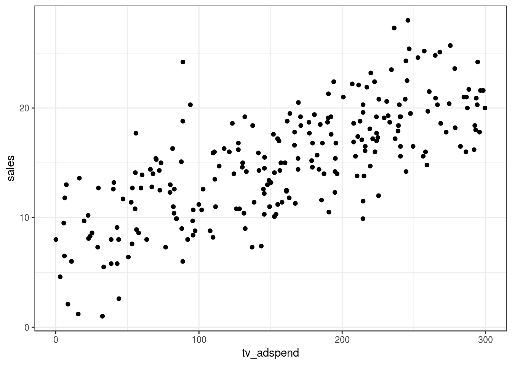
ggplot(sales_data, aes(x = online_adspend, y = sales)) + geom_point() +theme_bw()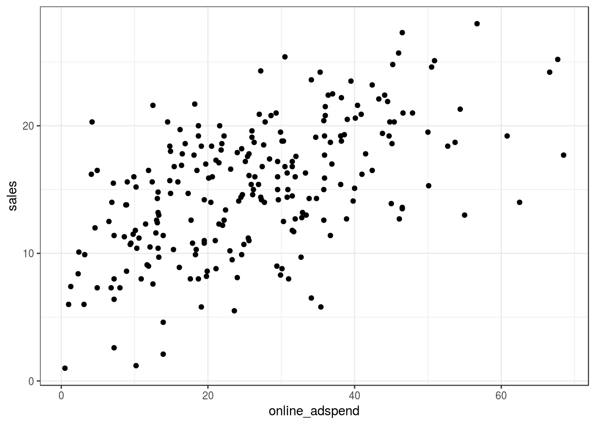
ggplot(sales_data, aes(x = radio_adspend, y = sales)) + geom_point() +theme_bw()
The plots already suggest that there might be a positive linear relationship between sales and TV- and online-advertising. However, there does not appear to be a strong relationship between sales and radio advertising.
11.3.4 Question 3
The estimate the model, we will use the lm() function:
linear_model <- lm(sales ~ tv_adspend + online_adspend + radio_adspend, data = sales_data)Before we can inspect the results, we need to test if there might be potential problems with our model specification.
11.3.4.1 Outliers
The check for outliers, we extract the studentized residuals from our model and test if there are any absolute values larger than 3.
sales_data$stud_resid <- rstudent(linear_model)
plot(1:nrow(sales_data),sales_data$stud_resid, ylim=c(-3.3,3.3)) #create scatterplot
abline(h=c(-3,3),col="red",lty=2) #add reference lines
Since there are no residuals with absolut values larger than 3, we conclude that there are no severe outliers.
11.3.4.2 Influencial observations
To test for influential observations, we use Cook’s Distance. You may use the following two plots to verify if any Cook’s Dinstance values are larger than the cutoff of 1.
plot(linear_model,4)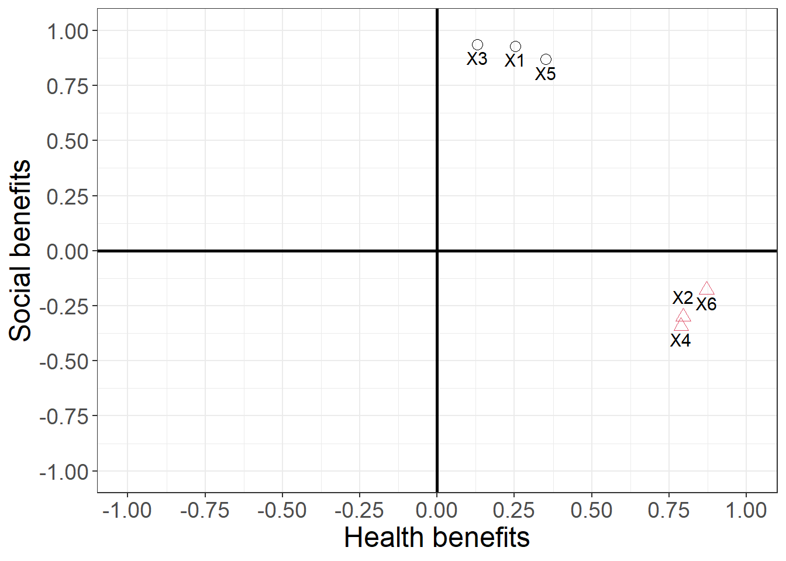
plot(linear_model,5)
Since all values are well below the cutoff, we conclude that influencial observations are not a problem in our model.
11.3.4.3 Non-linear relationships
Next, we test if a linear specification appears feasible. You could test this using the added variable plots:
library(car)
avPlots(linear_model)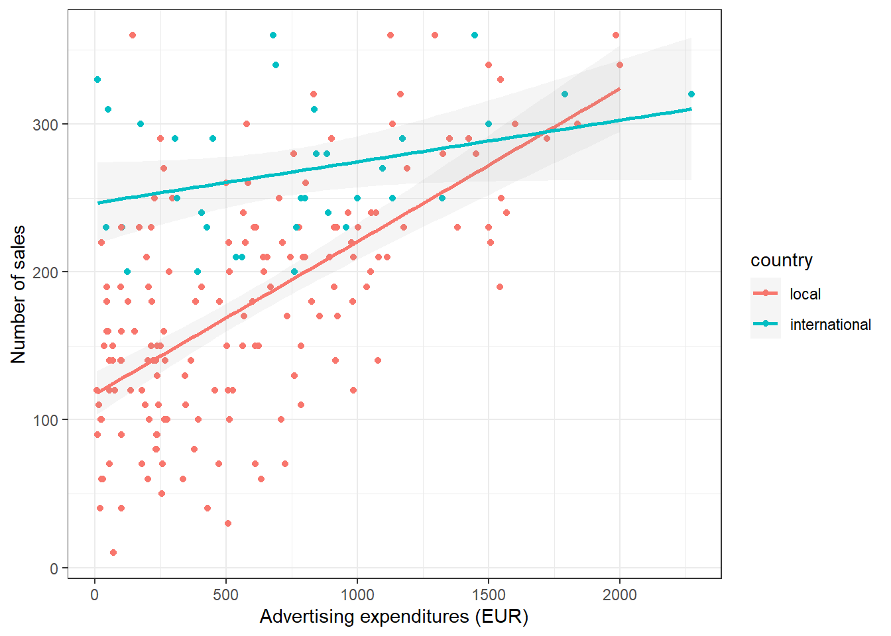
The plots suggest that the linear specification is appropriate. In addition, you could also use the residuals plot to see if the linear specification is appropriate. The red line is a smoothed curve through the residuals plot and if it deviates from the dashed grey horizontal line a lot, this would suggest that a linear specification is not appropriate.
plot(linear_model, 1)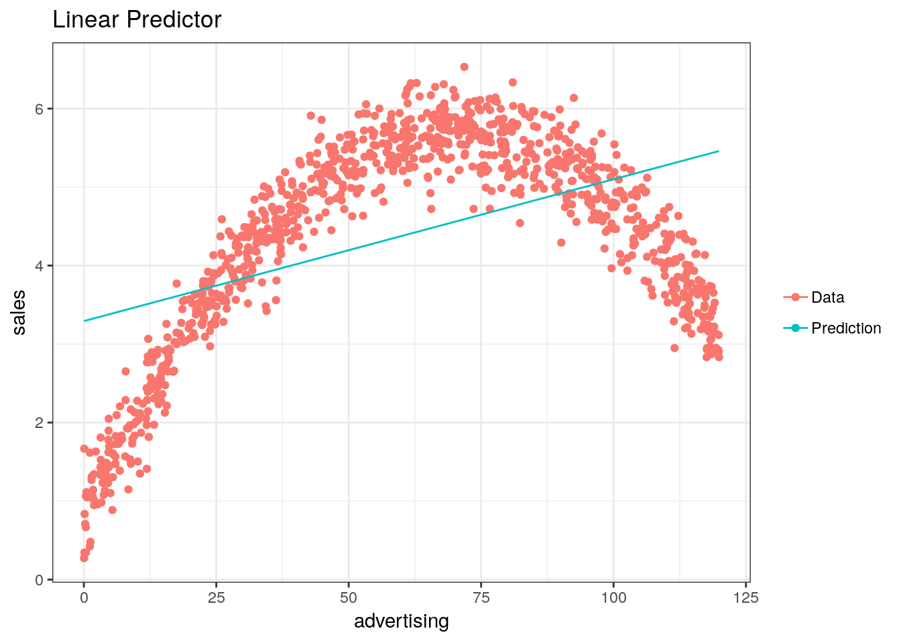
In this example, the red line is close to the dashed grey line, so the linear specification appears reasonable.
11.3.4.4 Heteroscedasticity
Next, we test if the residual variance is approximately the same at all levels of the predicted outcome variables (i.e., homoscedasticity). To do this, we use the residuals plot again.
plot(linear_model, 1)
The spread of residuals at different levels of the predicted outcome does not appear to be very different. Thus, we can conclude that heteroscedasticity is unlikely to be a problem.
11.3.4.5 Non-normally distributed errors
Next, we test if the residuals are approximately normally distributed using the Q-Q plot from the output:
plot(linear_model,2)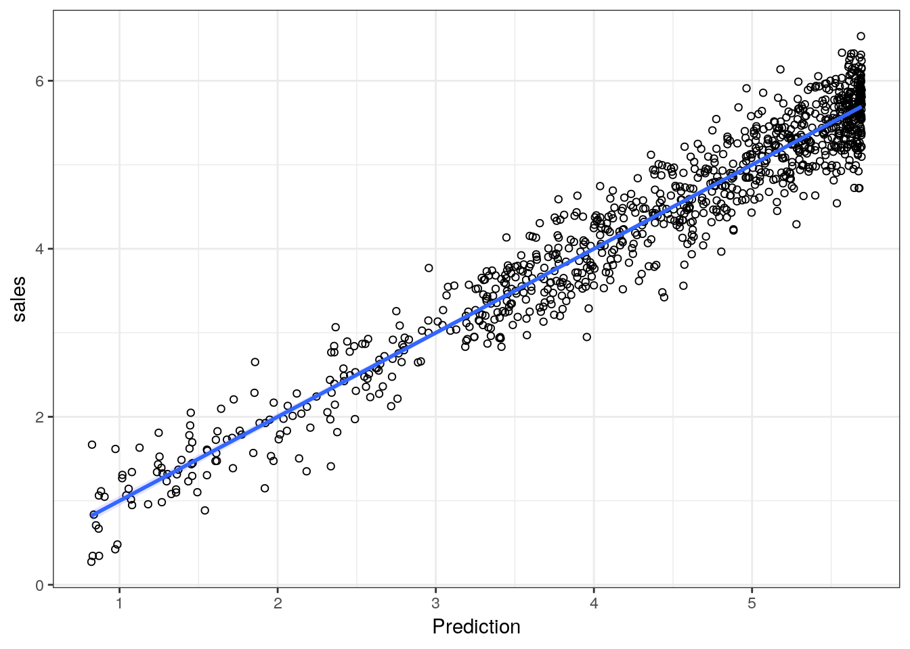
The Q-Q plot does not suggest a severe deviation from a normal distribution. This could also be validated using the Shapiro test:
shapiro.test(resid(linear_model))##
## Shapiro-Wilk normality test
##
## data: resid(linear_model)
## W = 1, p-value = 0.611.3.4.6 Correlation of errors
Next, we test if the residuals are uncorrelated. Any clustered pattern in the residuals plot would indicate dependence of errors.
plot(linear_model,1)
In our example, the residuals do not appear to be correlated since there is no clustered pattern.
11.3.4.7 Multicollinearity
To test for linear dependence of the regressors, we first test the bivariate correlations for any extremely high correlations (i.e., >0.8).
library("Hmisc")
rcorr(as.matrix(sales_data[,c("tv_adspend","online_adspend","radio_adspend")]))## tv_adspend online_adspend radio_adspend
## tv_adspend 1.00 0.04 -0.07
## online_adspend 0.04 1.00 0.02
## radio_adspend -0.07 0.02 1.00
##
## n= 240
##
##
## P
## tv_adspend online_adspend radio_adspend
## tv_adspend 0.49 0.30
## online_adspend 0.49 0.77
## radio_adspend 0.30 0.77The results show that the bivariate correlations are rather low. This can also be shown in a plot:
plot(sales_data[,c("tv_adspend","online_adspend","radio_adspend")])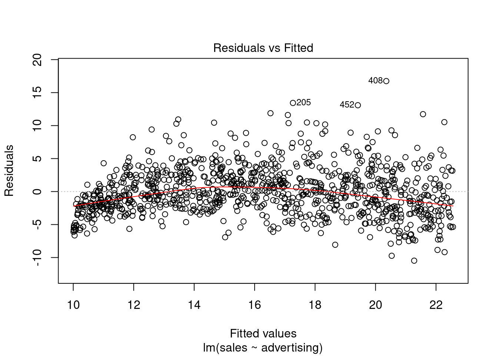
In a next step, we compute the variance inflation factor for each predictor variable. The values should be close to 1 and values larger than 4 indicate potential problems with the linear dependence of regressors.
library(car)
vif(linear_model)## tv_adspend online_adspend radio_adspend
## 1 1 1Here, all vif values are well below the cutoff, indicating that there are no problems with multicollinearity.
11.3.5 Question 4
In a next step, we will investigate the results from the model using the summary() function.
summary(linear_model)##
## Call:
## lm(formula = sales ~ tv_adspend + online_adspend + radio_adspend,
## data = sales_data)
##
## Residuals:
## Min 1Q Median 3Q Max
## -5.629 -1.338 -0.199 1.551 5.591
##
## Coefficients:
## Estimate Std. Error t value Pr(>|t|)
## (Intercept) 2.81171 0.48565 5.79 0.000000022 ***
## tv_adspend 0.04482 0.00172 26.04 < 0.0000000000000002 ***
## online_adspend 0.19162 0.01004 19.09 < 0.0000000000000002 ***
## radio_adspend 0.00713 0.01050 0.68 0.5
## ---
## Signif. codes: 0 '***' 0.001 '**' 0.01 '*' 0.05 '.' 0.1 ' ' 1
##
## Residual standard error: 2.2 on 236 degrees of freedom
## Multiple R-squared: 0.822, Adjusted R-squared: 0.82
## F-statistic: 364 on 3 and 236 DF, p-value: <0.0000000000000002For each of the individual predictors, we test the following hypothesis:
\[H_0: \beta_k=0\] \[H_1: \beta_k\ne0\]
where k denotes the number of the regression coefficient. In the present example, we reject the null hypothesis for the first two predictors, where we observe a significant effect (i.e., p < 0.05 for “tv_adspend” and “online_adspend”). However, we fail to reject the null for the “radio_adspend” variable (i.e., the effect is insignificant).
The interpretation of the coefficients is as follows:
- tv_adspend (β1): when tv advertising expenditures increase by 1 Euro, sales will increase by 0.04 units
- online_adspend (β2): when online advertising expenditures increase by 1 Euro, sales will increase by 0.19 units
- radio_adspend (β3): when radio advertising expenditures increase by 1 Euro, sales will increase by 0.01 units
You should always provide a measure of uncertainty that is associated with the estimates. You could compute the confidence intervals around the coefficients using the confint() function.
confint(linear_model)## 2.5 % 97.5 %
## (Intercept) 1.855 3.768
## tv_adspend 0.041 0.048
## online_adspend 0.172 0.211
## radio_adspend -0.014 0.028The results show that, for example, with a 95% probability the effect of online advertising will be between 0.172 and 0.211.
Although the variables are measured on the same scale, you should still test the relative influence by inspecting the standardized coefficients that express the effects in terms of standard deviations.
library(lm.beta)
lm.beta(linear_model)##
## Call:
## lm(formula = sales ~ tv_adspend + online_adspend + radio_adspend,
## data = sales_data)
##
## Standardized Coefficients::
## (Intercept) tv_adspend online_adspend radio_adspend
## 0.000 0.717 0.525 0.019Here, we conclude that tv advertising has the largest ROI followed by online advertising and radio advertising.
Another significance test is the F-test. It tests the null hypothesis:
\[H_0: R^2=0\]
This is equivalent to the following null hypothesis:
\[H_0: \beta_1=\beta_2=\beta_3=\beta_k=0\]
The result of the test is provided in the output above (“F-statistic: 363.7 on 3 and 236 DF, p-value: < 2.2e-16”). Since the p-value is smaller than 0.05, we reject the null hypothesis that all coefficients are zero.
If you would like to make it more explicit, you could use the anova() function to get the specific anova results.
anova(linear_model)## Analysis of Variance Table
##
## Response: sales
## Df Sum Sq Mean Sq F value Pr(>F)
## tv_adspend 1 3396 3396 725.54 <0.0000000000000002 ***
## online_adspend 1 1709 1709 365.07 <0.0000000000000002 ***
## radio_adspend 1 2 2 0.46 0.5
## Residuals 236 1105 5
## ---
## Signif. codes: 0 '***' 0.001 '**' 0.01 '*' 0.05 '.' 0.1 ' ' 1Regarding the model fit, the R2 statistic tells us that approximately 82% of the variance can be explained by the model. This can be visualized as follows:
sales_data$yhat <- predict(linear_model)
ggplot(sales_data,aes(yhat,sales)) +
geom_point(size=2,shape=1) + #Use hollow circles
scale_x_continuous(name="predicted values") +
scale_y_continuous(name="observed values") +
geom_abline(intercept = 0, slope = 1) +
theme_bw()
11.3.6 Question 5
Finally, we can predict the outcome for the given marketing mix using the following equation:
\[\hat{sales}= 0.045*150 + 0.192*26 + 0.007*15 = 14.623\]
summary(linear_model)$coefficients[1,1] +
summary(linear_model)$coefficients[2,1]*150 +
summary(linear_model)$coefficients[3,1]*26 +
summary(linear_model)$coefficients[4,1]*15## [1] 15This means that given the planned marketing mix, we would expect to seel around 14,623 units.
Casella, George, and Roger L Berger. 2002. Statistical Inference. 2nd ed. Duxbury Pacific Grove, CA.